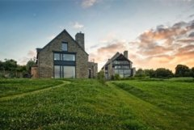

No. 02
02
La Ferme du Vent
6 stand-alone "kled" gîtes · same gardens · off-grid
400 – 500 m · ~6 min
€275 night 1 · €200 after
Pkg incl. dinner €590
No wifi / no TV by design
Wood-and-stone kleds scattered through the same Château gardens, with access to the Celtic-style Bains Celtiques spa in the old farmhouse.[2][16] The €590 "kled + dinner at Le Coquillage" package is the cleanest way to combine the two on a single bill.[11]